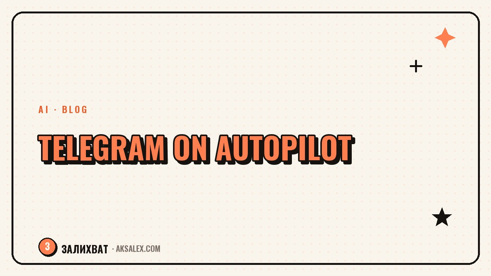

How to Run a Telegram Channel With Neural Networks

Why a Telegram channel needs neural networks
The channel format implies frequent posting - from three posts a week and up. Without a system, the author quickly hits a wall: there's a topic, but sitting down and writing text from scratch every time is hard. A neural network closes exactly this gap between an idea and a finished draft.
This isn't about a neural network coming up with your opinion for you. It's good where you need structure, a rough version of a phrasing, or help with routine formats: announcements, roundups, polls, short pieces of news from your niche.
Content plan: what to write about each week
Take 4-5 recurring categories - for example, a case breakdown, a personal observation, an answer to a follower's question, a tool roundup. A neural network helps sketch out 15-20 topics for each category a month ahead, if you give it context about your niche and examples of past posts.
- Describe your channel's subject to the neural network and give 2-3 examples of successful posts
- Ask for a list of topics by category, not a general list of ideas
- Filter out topics you're not interested in developing - that's what the list is for
- Slot the remaining topics into days on a calendar
Post text: a draft, not a finished result
A workable approach: you state the idea in 2-3 sentences, the neural network expands it into a post structure with paragraphs, and you rewrite the text in your own words and add personal details. If you hand the whole job to the neural network from scratch, the post comes out smooth and faceless - followers spot that from the first lines.
A neural network is good as a draft and an editor, but not as the author of your voice. The voice in the text is the one thing brands and followers can't copy from your competitors.
Separately, a neural network is handy for routine formats: a livestream announcement, a reminder post, a weekly link digest. Here a personal voice isn't critical, and speed matters more.
Covers, polls, and auto-posting
| Task | How a neural network helps |
|---|---|
| Post cover | Generating an image from a description instead of searching stock photos |
| Planning when posts go out | Scheduled-posting services with AI timing suggestions |
| Polls for engagement | Ready-made question wording for the post's topic |
| Answering common questions | A draft reply that you edit before sending |
Auto-posting breaks the habit of writing a post at night right before it goes out because you forgot the schedule. The content plan and the publishing queue work together: the plan supplies topics, the queue supplies consistency.
Common mistakes when running a channel with AI
Publishing the neural network's text without edits
Telegram channel readers subscribe to a person, not an algorithm. Text without your details and opinion gets unfollowed fast.
Losing consistency over the perfect draft
Sometimes it's easier to rewrite 70% of a draft and publish than to wait for inspiration for the perfect original text. Consistency matters more for a channel's growth than the flawlessness of every single post.
Frequently Asked Questions
Won't my channel end up sounding the same as others if everyone uses neural networks?
It will, if you publish text without edits. Personal examples, opinion, and your manner of speaking are what a neural network doesn't know about you and can't supply in your place.
How much time does a neural network save when running a channel?
Usually at the drafting and topic-picking stage - anywhere from a third to half the time per post. You still do the final edit and add the personal details yourself.
Can a Telegram channel be fully automated with AI?
Technically yes, but a channel like that quickly loses followers' trust. Automation is best left for the routine - scheduling, polls, covers - and not for the substance of the posts.
Which neural network is best for Telegram text?
Any modern text neural network with a chat works - the difference is in interface details. What matters more than the model is how you frame the task and edit the result.
Where do I start if the channel has long been abandoned?
With a content plan for the month and the acknowledgment that not every post has to be perfect. A neural network will help you quickly sketch out topics, and consistency will win back followers' trust better than one high-quality post.
Enjoyed this one? Here's what to read next. A blogger's media kit in an evening: what to include and how AI takes over the grind of assembling the text and numbers.
Read the article →not by hand